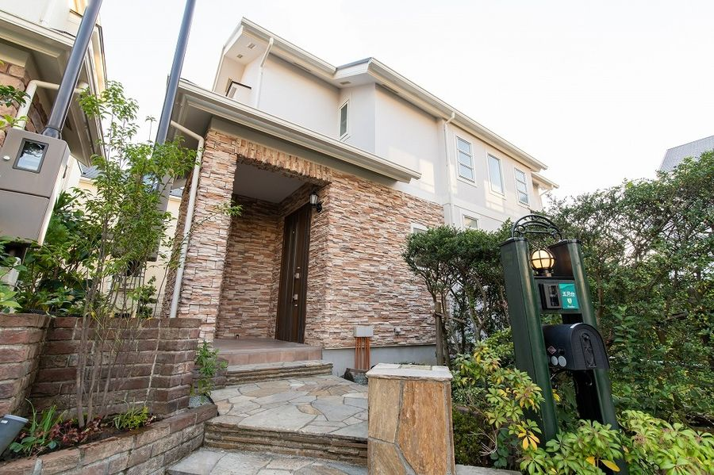
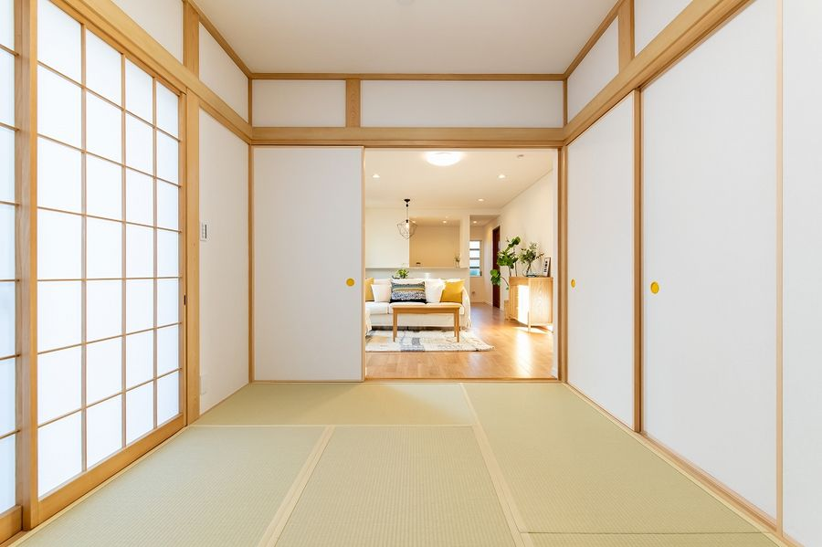
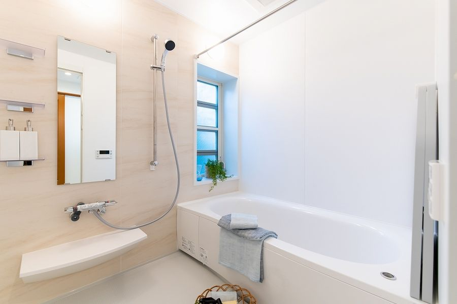
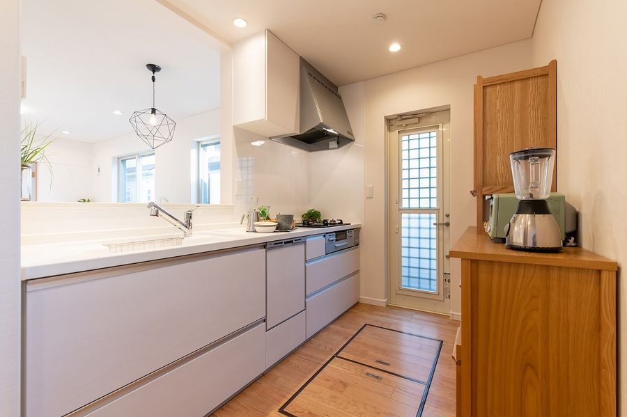

あんしんストック住宅の試行開始

小田急沿線既存住宅流通促進協議会では、空き家・住宅ストックの利活用や、子育て世代の流入促進、住宅と居住者のミスマッチ解消に向けた取組みの一環として、「あんしんストック住宅」の仕組みを開発しました。
あんしんストック住宅は、既存の戸建住宅を対象に、インスペクション、調査に基づくリフォーム、瑕疵保険、維持保全計画、住宅履歴管理などを組み合わせ、安心して住み継げる住宅として再生・流通させる買取再販型の取組みです。
2020年には、第1号試行物件として、小田急多摩線「五月台」駅徒歩4分に位置する築18年の戸建住宅を取得しました。外壁屋根塗装、バルコニー防水、内装・設備交換、換気性能の向上などのリフォームを行い、協議会で定めた仕組みに基づき、あんしんストック住宅として再販しました。
本スキームでは、住宅の状態を見える化し、必要な改修や維持管理の仕組みを整えることで、築年数を経た住宅であっても、安心して次の住まい手へつなぐことを目指しています。
協議会にとって、あんしんストック住宅は、空き家予防と住宅ストックの循環利用を具体化する代表的な取組みのひとつです。



